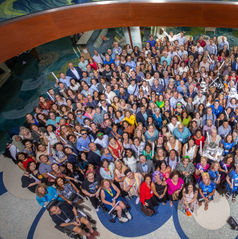

Annual meeting archive
NEALS 年会
公开档案
按年份查找年度会议记录、议程、摘要、论文集、会后报道与其他公开资料。档案记录来源与证据边界；“暂未找到证据”不等于“确认未举行”。
年度导航跨年搜索来源直达1995—2026

2023 年会 · 官方图库缩略图查看图库 ↗
32
覆盖年份1995 至 2026
83
公开资源条目网页、文件与图库项目
51
源档案包内有本地副本此浏览页跳转至原始来源